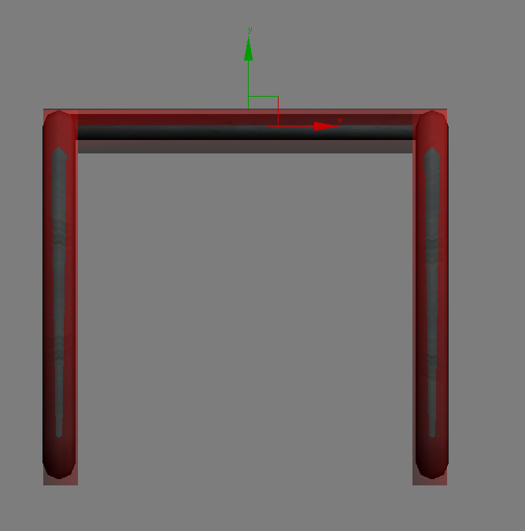
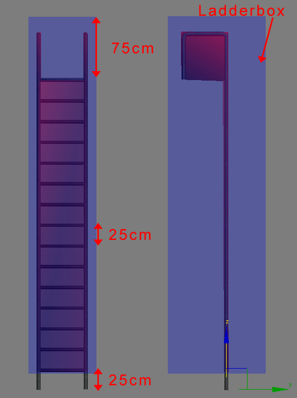

Creating Ladders
Following is a list of guidelines for creating ladders for use in the CRYENGINE.
Ladder Measurements
- The pivot has to be 25cm below the upper edge of the first rung.
- The distance from upper edge of the rung to the edge of the next rung: 25 cm.
- The distance from upper edge of the last (grabbed) rung to upper edge of the whole ladder object (proxies are also taken into account): 75 cm.
- The length of each rung: >50cm.
- The number of rungs: 7 + multiples of 2 (the initial "start climbing ladder" needs 7 rungs. A climbing cycle is 2 rungs long); i.e. 10 cycles on a ladder needs 27 rungs (7+ 10*2).
Collision/Proxys
- The ladder needs to have a nodraw collision proxy for player/bullet collision.
- The ladder needs to have a box-proxy that roughly defines the area the player can push a button to use the ladder (Ladderbox).
- This Ladderbox needs to have a separate matID with the mat_ladder surface-type.
- The Physicalization of the ladderbox has to be no_collide.
Positioning Before Export
- The player will be facing the negative y-axis while climbing up/down the ladder. So, the pivot orientation of the ladder needs to look like the pictures below.
- The position of the pivot point is the reference point for the animation so it is highly important that the pivot is centered in the x-axis of the rungs and positioned as described above in the ladder measurements above.
This is absolutely crucial in order to have correct interaction between characters and the ladder.
This is the correct position for the rungs and the pivot (Top View):

These are the correct distances for the rungs (Front/Side View):
